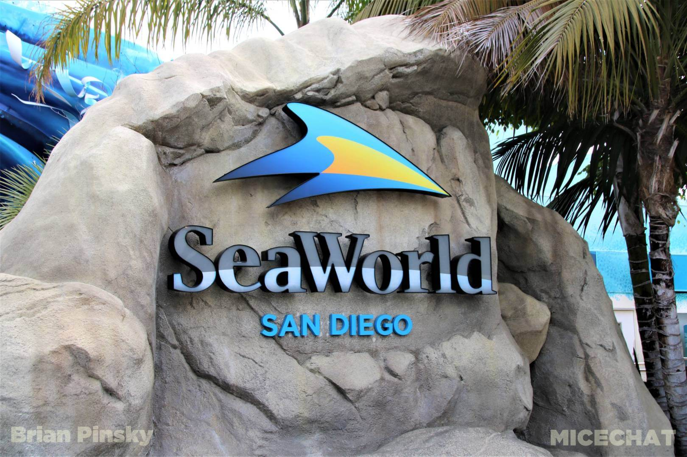

San Diego is on the Pacific coast of California. Enjoy our weather, beaches and fun activites
Top 3 activities to do in San Diego
Balboa Park
Balboa Park is a 1,200-acre historic urban cultural park in San Diego.It offers 15 museums, various gardens, arts and international culture associations.Learn More

Sea World
SeaWorld San Diego is an animal theme park, oceanarium, outside aquarium and marine mammal park.Learn More
San Diego Zoo
The San Diego Zoo is a 100-acre wildlife park and home to over 12,000 rare and endangered animals, representing more than 650 species and subspecies.Learn More
Your Guide
"I have lived in San Diego for over 40 years. Let me show you what our fine city has to offer."